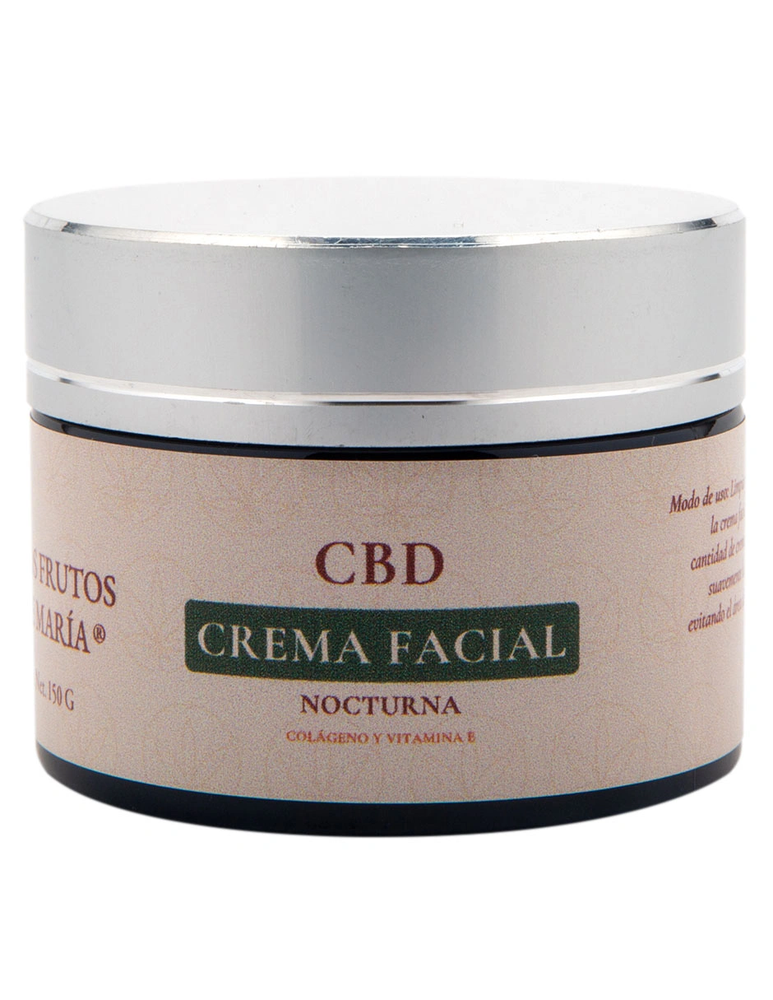
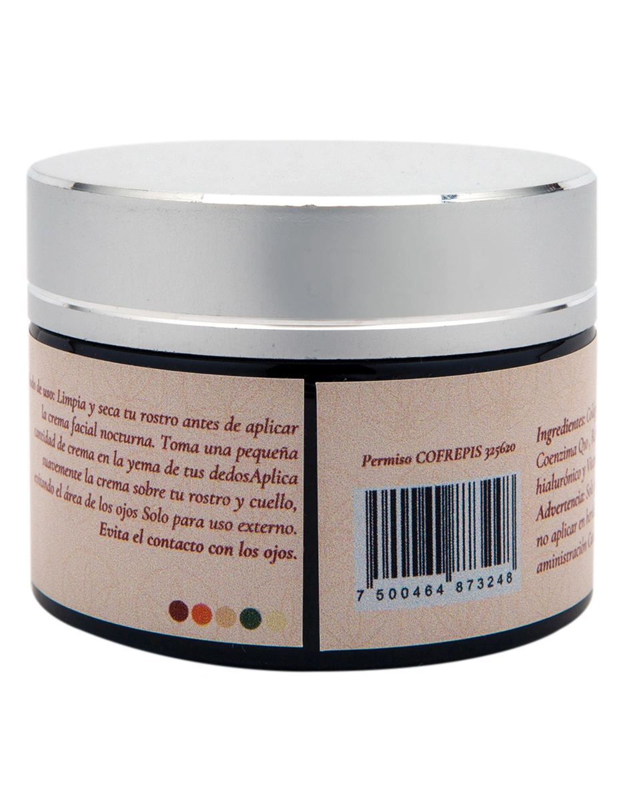

CBD + Colágeno • Skincare nocturno
Crema Facial Nocturna
Skincare que se siente como descanso. Ritual nocturno premium para hidratar, restaurar y acompañar tu piel en modo recuperación.
Dónde comprar →
Beneficios
Lo que puedes esperar
💧
Hidratación profunda
Piel más hidratada y uniforme al despertar.
🌿
Piel calmada
Sensación de piel más calmada y cómoda toda la noche.
🌙
Ritual nocturno
Ritual nocturno que ayuda a bajar el ritmo del día.

Instrucciones
Cómo usar
- Aplicar por la noche sobre piel limpia (rostro y cuello).
- Masajear 30–60 segundos: conviértelo en ritual.
- Usar diario por 14 días para evaluar resultados.
Ideal para
Para quién es
- Quien busca rutina nocturna premium.
- Piel que se siente cansada, tirante o estresada.
- Personas que quieren constancia sin complicarse.
FAQ
Preguntas frecuentes
Está diseñada para absorberse con masaje y dejar sensación cómoda (no pesada).
Sí, pero su intención es la noche (modo recuperación).
Limpieza suave + crema + sueño (ese combo gana).
Avisos importantes
- Uso responsable: la información de este sitio es informativa y no sustituye asesoría médica.
- Nuestros productos no están destinados a diagnosticar, tratar, curar o prevenir enfermedades.
- Si estás embarazada/o, lactando o bajo tratamiento, consulta a un profesional de salud antes de usar cualquier producto.
Tu piel merece un ritual
Encuentra la Crema Facial Nocturna LFDM en nuestros puntos de venta.
Dónde comprar →